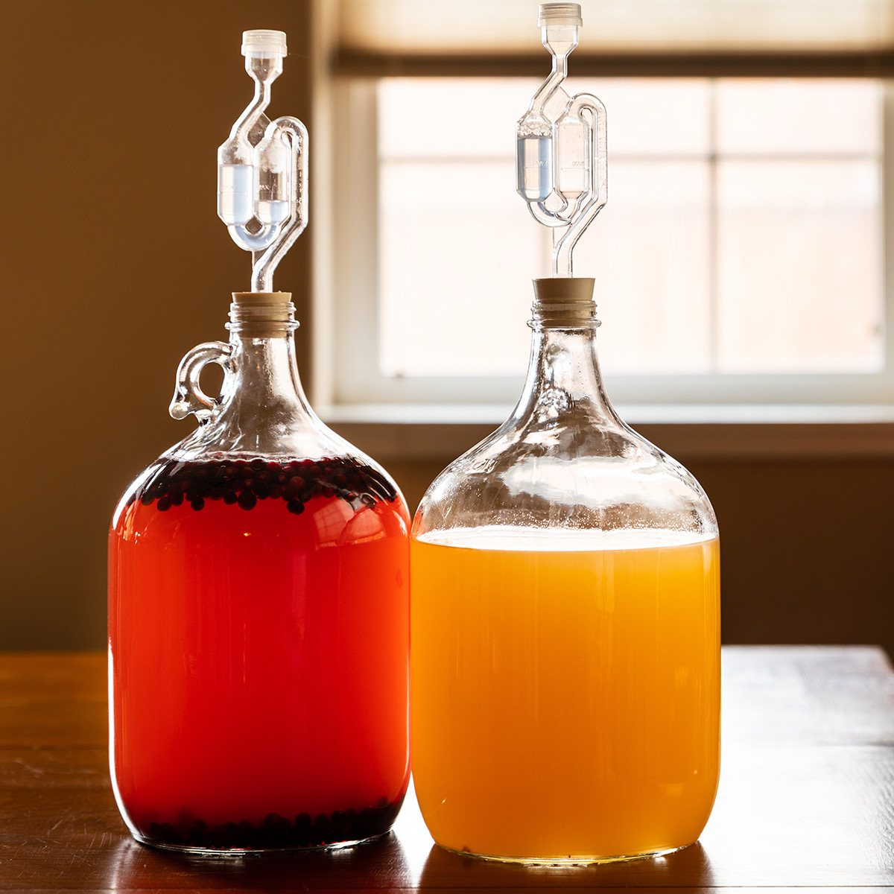

Mead

Description
It's been around since viking times, but it's as good today as it was way back then. Plus, all you need is honey, water, and yeast to make it.
Ingredients
- Quality honey
- A pack of Mead Yeast
- Water
- Some fruit
Steps
- Mix honey and water together in a container of choice.
- Add mead yeast and some sort of additional nutrition to the honey water mixture.
- Fit the airlock to your vessel and wait. The yeast will start to work, turning the sugar into CO2 and alcohol.
- When the bubbling stops, that tells you the first fermentation is finished.
- Bottle and label.
Home